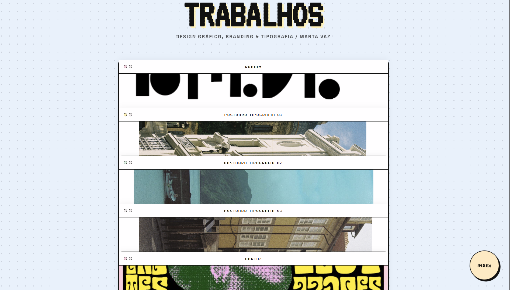
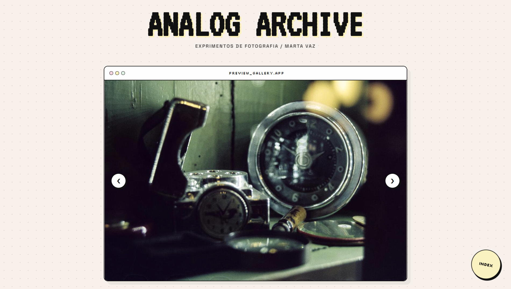
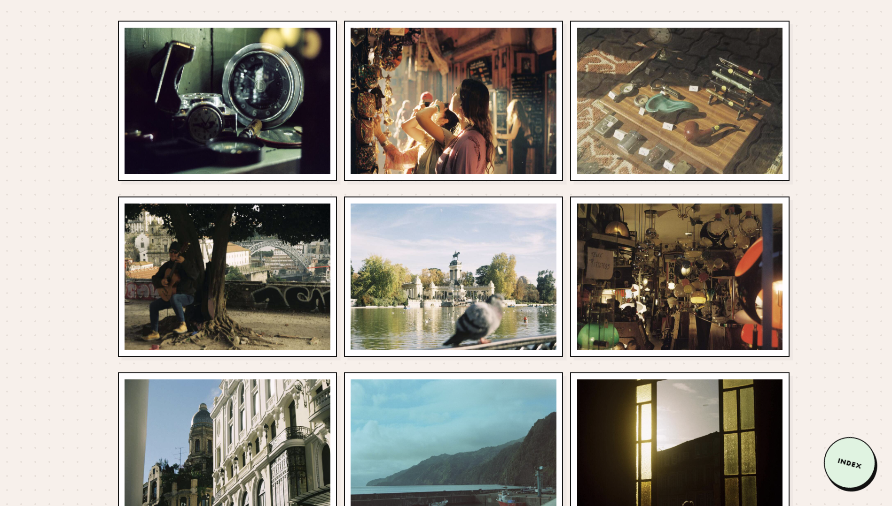
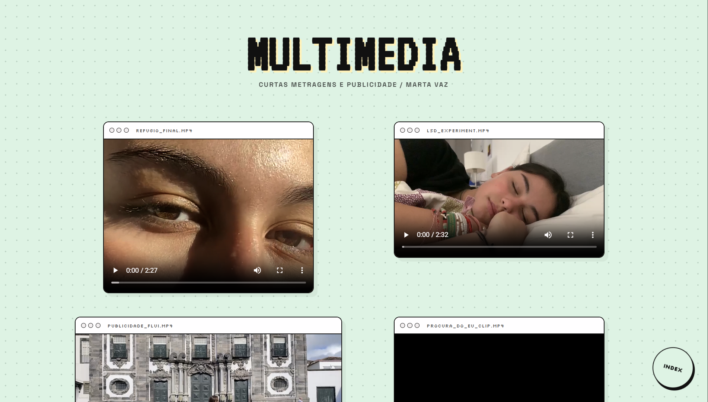
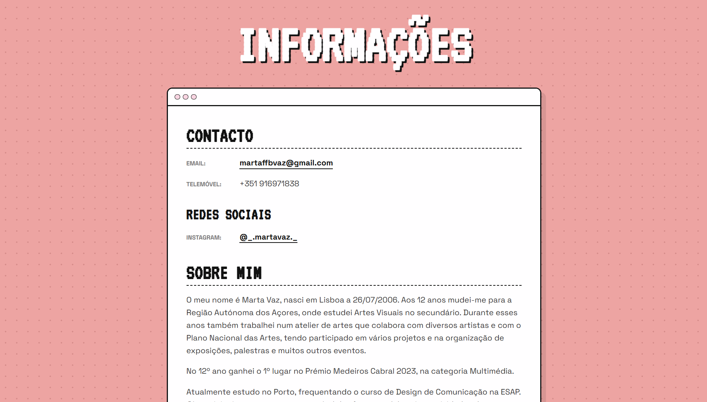

Personal system
Reimagine the portfolio as a personal operating system rather than a sequence of traditional pages.
MARTA OS / VERSION 1.2
An experimental personal portfolio designed as a digital operating system, bringing together academic work, photography, video and personal archives.

Marta OS was created while I was beginning to explore programming and web development.
The project became a way to bring together my academic path and different areas of my creative practice — photography, multimedia, graphic work and personal experimentation.
Rather than creating a conventional portfolio, I designed a digital desktop where every folder opens a different part of my work.
Reimagine the portfolio as a personal operating system rather than a sequence of traditional pages.
Divide the work into folders dedicated to photography, video, academic projects and personal information.
Allow visitors to open windows and files, making navigation itself part of the personality of the portfolio.
The Works folder became an evolving collection of graphic design, typography, branding and visual experiments created throughout my academic path.

Photography is one of the areas I feel most connected to.
Much of the archive was created through analogue photography, documenting places, objects, light and everyday moments.


The multimedia folder brings together short films, editing experiments and audiovisual projects created during my academic development.

Refúgio is a video art piece exploring the space between dreams, rest and disconnection from reality.
“Diante dos meus olhos vejo um mar de sonhos, onde a alma constrói um sítio para descansar enquanto a minha mente afunda e o lençol afasta-me da realidade.”
The work was conceived as an audiovisual installation, presented through projection to reinforce its immersive and contemplative character.
The personal section combines contact information with my academic background, creative interests and early experiences in arts and multimedia.

Each creative area becomes its own folder, making the portfolio feel like a personal desktop.
Content is displayed inside windows, creating a clear system while keeping the navigation playful.
Soft pastel colours contrast with black outlines and pixel-inspired interface details.
The visitor is encouraged to explore, open and move through content rather than simply scroll through a portfolio.
Marta OS became an early experiment in combining design, interaction and code. More than presenting finished work, the website reflects how I organise, explore and communicate my creative practice.